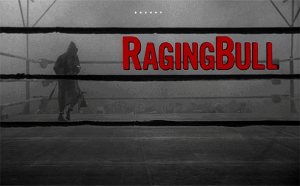

Thoughts on Films that are Personally Important to Me
The greatest films show stories and selections of life that, despite being set in totally different times and circumstances, shed light on dimensions of my own life. In every personally meaningful character I can't help but see myself. I like to think that the best way for another person to understand who I am is to watch these films---after all, these films helped me understand myself! They give me the "words" to articulate who I am, what I value, and what weighs on me.
Raging Bull (1980)

In
Raging Bull, Jake LaMotta is an up-and-coming Italian American boxer who is aiming for the middleweight title. He spots Vickie, a young girl, at a local pool and pursues a relationship with her despite being married himself. Some years later, he and Vickie marry.
Jake wins the middleweight title after several years. His marriage with Vickie is tumultuous. He believes that sex weakens him before a fight, so he attempts to deprive himself from sexual arousal in the days leading up to a fight. He is violently jealous about Vickie and frequently abuses her.
His suspicions and paranoia rises to a boil when he accuses (probably wrongly) Vickie of having an affair with his brother Joey. Jake assaults his brother and knocks Vickie unconscious in front of his brother's family, resulting in his estrangement from his brother.
Several years later, Jake, Vicky, and their children move to Miami. Jake is overweight and owns a club. Vicky tells him that she is divorcing him and taking full custody of their kids. Not long after, Jake is arrested for allowing underage girls in his club and goes to jail. He flies into a rage when being led to his jail cell, but his rage becomes grief, holding his head in his hands and sobbing while repeatedly punching the concrete wall.
Some years later, he goes back to New York with nobody left in his life. He runs into his brother Joey who forgives him tentatively, though it is clear that he wasn't nothing to do with Jake.
In the final scene, Jake recites the famous lines from
On the Waterfront (1954) as he prepares for his comedy routine while looking in the mirror:
It wasn't him Charlie, it was you. Remember that night in the Garden you came down to my dressing room and you said, "Kid, this ain't your night. We're going for the price on Wilson." You remember that? This ain't your night! My night! I coulda taken Wilson apart! So what happens? He gets the title shot outdoors on the ballpark and what do I get? A one-way ticket to Palookaville! You was my brother, Charlie, you shoulda looked out for me a little bit. You shoulda taken care of me just a little bit so I wouldn't have to take them dives for the short-end money.
You don't understand. I coulda had class. I coulda been a contender. I coulda been somebody, instead of a bum, which is what I am let's face it. It was you, Charley."
---
Jake LaMotta is effectively a psychopathic monster. There is no attempt to psychologize him - no insight into his past or what makes him this way. We only see the uninhibited, consuming rage that he takes out on the people, especially the women, around him. His spontaneity and his violence are horrific.
But despite LaMotta not having a single redeeming quality within himself, the film manages to draw us into a deep alliance with a character that
should be reviled. Two scenes stand out in particular: the title sequence where LaMotta shadowboxes in the ring and the montage of happy scenes between Jake and Vicky. The yearning of the music speaks to us, and we know, against all other inclinations, that this is our hero. But as the film goes on, it becomes clear that his journey is defeating himself - from his shadowboxing in the empty ring to his attempts at abstinence to his catharsis in the jail cell to his final recitation and verdict of guilt in the backstage mirror.
{kind=link}